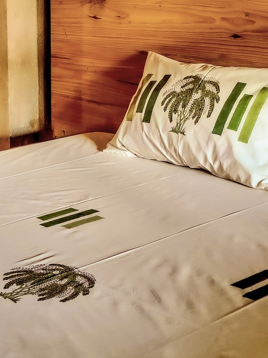

← BACK TO STUDIES


Punar
A pause taken beneath a tall palm.
Punar is the cloth that records the second look, when the rhythm slows. The palm sits inside a more openly spaced rectangular structure.
